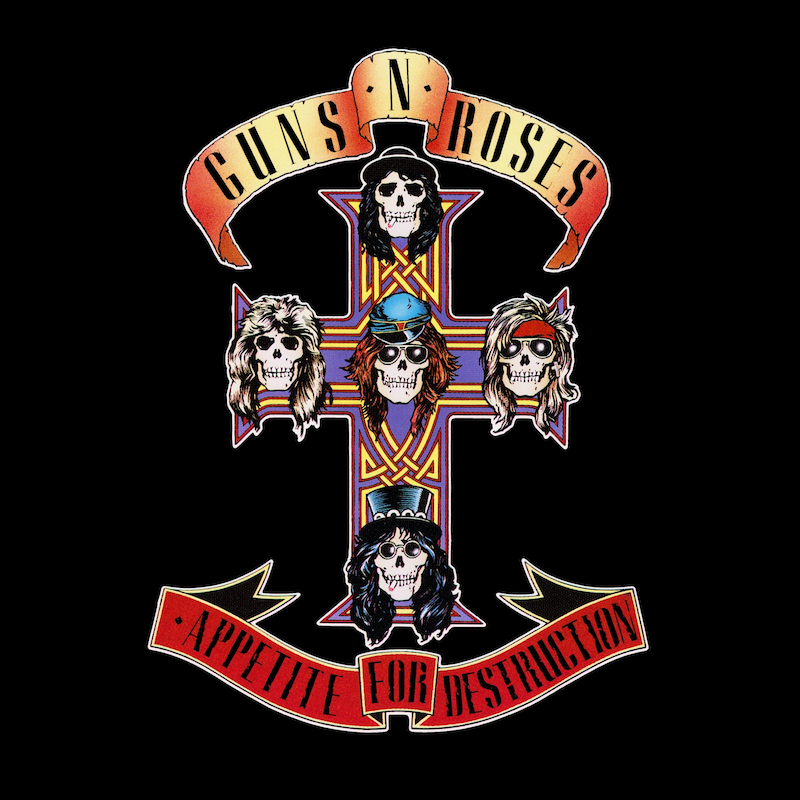

Un sencillo muy popular
“Sweet Child o' Mine” es una canción del grupo de hard rock Guns N' Roses. Fue publicada en su primer álbum, Appetite for Destruction, el 21 de julio de 1987. La letra de Sweet Child O' Mine evoca imágenes de la infancia y la inocencia a través de sus descriptivas líneas. La sonrisa de la mujer descrita en la canción trae al narrador recuerdos de un tiempo más simple y feliz, donde todo era tan fresco como el cielo azul brillante.
Un poco de historia
La canción fue escrita por Axl Rose para su entonces novia y después esposa Erin Everly. Slash ha argumentado sentir un desprecio por la canción debido al hecho de que simplemente era un ejercicio técnico y un chiste. En el especial de VH1, afirmó que tocó el riff en una sesión de ensayo a modo de broma.
.jpeg)
Sweet Child O' Mine Lyrics
She's got a smile that it seems to me
Reminds me of childhood memories
Where everything was as fresh
As the bright blue sky
Now and then when I see her face
She takes me away to that special place
And if I stare too long
I'd probably break down and cry
Oh, oh, oh, sweet child of mine
Oh, oh, oh, oh, sweet love of mine
She's got eyes of the bluest skies
As if they thought of rain
I hate to look into those eyes
And see an ounce of pain
Her hair reminds me of a warm safe place
Where, as a child, I'd hide
And pray for the thunder and the rain
To quietly pass me by
Oh, oh, oh, sweet child of mine
Oh, oh, oh, oh, sweet love of mine
Oh, oh, oh, oh, sweet child of mine
Ooh, yeah, yeah
Ooh! Sweet love of mine
Where do we go?
Where do we go now?
Where do we go?
Sweet child
Sweet child of mine
Premios
- Ganador del Mejor video de «heavy metal», MTV Awards, 1989.
- Nominado Mejor video de grupo, MTV Awards, 1989.
- Ganador Mejor video de nuevo artista, Billboard Awards, 1988.
- Ganador Mejor videoclip del año, Burrn readers Poll, 1988.
- Votado al puesto n.º 6 al Mejor video musical jamás hecho, MTV/TV Guide, 1999.